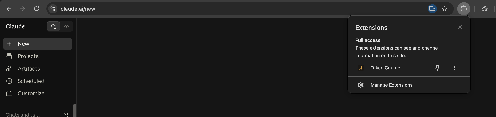
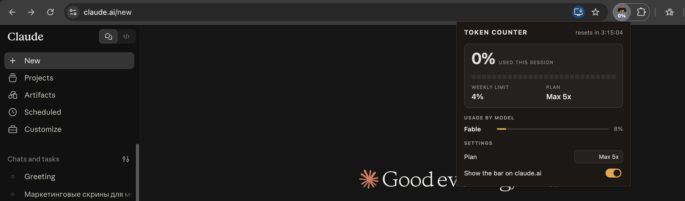

Chrome hides new extensions behind the puzzle icon — pin it first.

Step 1 Step 2No setup needed. Open any chat on claude.ai and watch your current session, weekly limit, model and effort update as you work. It turns red when you get close to a limit.
The popup shows your session gauge, weekly limits per model, reset timer and settings. Everything comes from Claude's own usage data — the extension sends nothing anywhere else.

Step 3